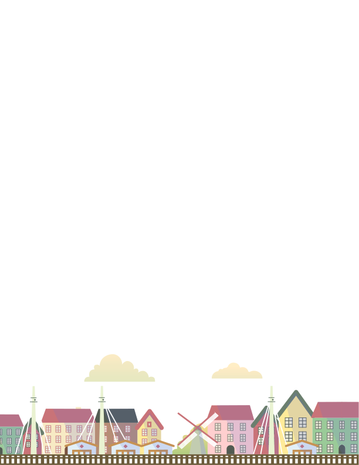
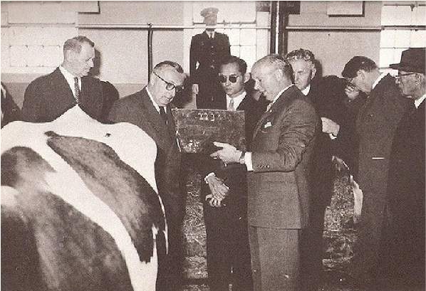
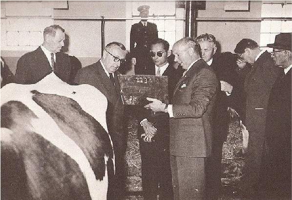

DENMARK



 

“การเลี้ยงโคนมก็เป็นอาชีพที่ดีสำหรับคนไทย เหมาะกับประเทศ และถ้าใช้หลักวิชาที่เหมาะสม ก็จะทำให้มีความเจริญและมีรายได้ดี”
พระบาทสมเด็จพระปรมินทรมหาภูมิพลอดุลยเดช และ สมเด็จพระนางเจ้าสิริกิติ์พระบรมราชินีนาถ เสด็จประพาสทวีปยุโรป ในการเสด็จทรงประทับแรมอยู่ ณ ประเทศเดนมาร์ค ทรงให้ความสนพระทัยเกี่ยวกับกิจการการเลี้ยงโคนมของชาวเดนมาร์คเป็นอย่างมาก ด้วยทรงเล็งเห็นว่าอาชีพการเลี้ยงโคนมจะช่วยให้ชาวไทยได้บริโภคอาหารที่มีคุณค่า ทั้งยังช่วยให้เกษตรกรไทยได้มีอาชีพที่มั่นคงและเป็นหลักแหล่ง
โครงการส่งเสริมการเลี้ยงโคนมในประเทศไทยจึงได้เริ่มต้นขึ้น ด้วยความร่วมมือด้านวิชาการการเลี้ยงโคนมระหว่างประเทศไทยและประเทศเดนมาร์ค
โดยรัฐบาลเดนมาร์คได้ส่งคณะผู้เชี่ยวชาญมาทำการศึกษาความเป็นไปได้ของการเลี้ยงโคนมของประเทศไทย และสำรวจพื้นที่ร่วมกันกับเจ้าหน้าที่ฝ่ายไทย พบว่าอำเภอมวกเหล็ก จังหวัดสระบุรี มีความเหมาะสมที่สุด เพราะเป็นสถานที่เป็นหุบเขาสวยงาม มีแหล่งน้ำสะอาด และไม่ไกลจากตลาดกรุงเทพฯ
ต่อมาในปี พ.ศ. 2504 รัฐบาลเดนมาร์ค ได้ส่ง นายนิลส์ กุนน่าส์ ซอนเดอร์กอร์ด
ผู้เชี่ยวชาญชาวเดนมาร์ค เพื่อมาพัฒนาพื้นที่ร่วมกับเจ้าหน้าที่ฝ่ายไทย คือ
ดร.ยอด วัฒนสินธุ์ ผู้อำนวยการองค์การส่งเสริมกิจการโคนมแห่งประเทศไทย (อ.ส.ค.) คนแรก จนทำให้โครงการส่งเสริมการเลี้ยงโคนมในประเทศไทย
เริ่มเป็นรูปธรรม
กระทั่งในวันที่ 16 มกราคม พ.ศ. 2505 นับได้ว่าเป็นวันที่มีความสำคัญยิ่งในประวัติศาสตร์ของการเลี้ยงโคนมในประเทศไทย พระบาทสมเด็จพระปรมินทรมหาภูมิพลอดุลยเดช และ สมเด็จพระเจ้าเฟรดเดอริคที่ 9 แห่งประเทศเดนมาร์ค ทรงประกอบพิธีเปิดฟาร์มโคนม และศูนย์ฝึกอบรมการเลี้ยงโคนมไทย-เดนมาร์ค อย่างเป็นทางการ
จากนั้นในปี ในปี พ.ศ. 2514 รัฐบาลไทยได้รับโอนกิจการฟาร์มโคนมและศูนย์ฝึกอบรมการเลี้ยงโคนมไทย-เดนมาร์ค จัดตั้งเป็นรัฐวิสาหกิจ สังกัดกระทรวงเกษตรและสหกรณ์ มีชื่อว่า “องค์การส่งเสริมกิจการโคนมแห่งประเทศไทย (อ.ส.ค.)” พร้อมทั้งได้กำหนดให้วันที่ 17 มกราคมของทุกปี เป็นวันโคนมแห่งชาติ
.svg)
ทุกวันนี้ผลิตภัณฑ์นม ภายใต้แบรนด์ไทย-เดนมาร์ค ผลิตจากน้ำนมจากแม่วัวพันธุ์ดี จากฟาร์มเกษตรกรของสหกรณ์โคนมกว่า 40 แห่งทั่วประเทศ ส่งตรงถึงศูนย์รับน้ำนม ก่อนส่งมายังโรงงานแปรรูปโรงงานนมทั้งหมด 5 แห่งคือ โรงงานนมมวกเหล็ก โรงงานนมปราณบุรี โรงงานนมขอนแก่น โรงงานนมเชียงใหม่ และ โรงงานนมสุโขทัย